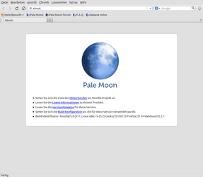
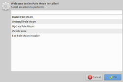
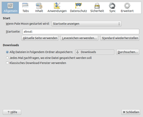
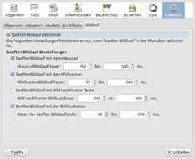

Pale Moon
Dieser Artikel wurde für die folgenden Ubuntu-Versionen getestet:
Ubuntu 16.04 Xenial Xerus
Ubuntu 14.04 Trusty Tahr
Zum Verständnis dieses Artikels sind folgende Seiten hilfreich:
|  |
| Programmoberfläche |
Der Webbrowser Pale Moon  ist eine Abspaltung von Firefox. Das von der Fa. Moonchild Productions initiierte und betreute Programm steht wie das Originalprogramm unter der MPL-Lizenz. Allerdings gelten für den Vertrieb der Binärversion spezielle Regeln: Redistributing Pale Moon . Neben Linux ist es auch für Windows und Android verfügbar.
ist eine Abspaltung von Firefox. Das von der Fa. Moonchild Productions initiierte und betreute Programm steht wie das Originalprogramm unter der MPL-Lizenz. Allerdings gelten für den Vertrieb der Binärversion spezielle Regeln: Redistributing Pale Moon . Neben Linux ist es auch für Windows und Android verfügbar.
Vorteile:
klassische, effiziente und anpassbare Benutzeroberfläche (entspricht der alten Oberfläche von Firefox 28 oder älter)
für moderne Prozessoren optimiert (SSE2 als Voraussetzung)
(nach Installation eines Sprachpakets) vollständig auf Deutsch übersetzt
regelmäßige Aktualisierungen
schnelle Seitenanzeige und Ausführung von Skriptsprachen
erhöhte Stabilität (weniger Browser-Abstürze)
auf Wunsch: Import vorhandener Firefox-Profile
Nachteile:
keine Installation aus den offiziellen Paketquellen
kleine (aber aktive) Community
eingeschränkte Unterstützung von Firefox-Erweiterungen (Add-ons) und Designs (Themes)
exklusive Erweiterungen und Designs (Firefox-inkompatibel)
extensive, aber wachsende Unterstützung für HTML5 und CSS3
Pale Moon dient auch als Grundlage für die Thunderbird-Alternative FossaMail.
Installation¶
 Das Programm ist nicht in den offiziellen Paketquellen enthalten. Da auch keine Fremdquelle zur Verfügung steht, muss die Installation manuell erfolgen.
Das Programm ist nicht in den offiziellen Paketquellen enthalten. Da auch keine Fremdquelle zur Verfügung steht, muss die Installation manuell erfolgen.
Fremdquelle¶
Die Entwickler bieten ein OBS-Repository als Fremdquelle an. Nachfolgend die Befehle zum Einrichten und Authentifizieren der Paketquelle am Beispiel von Ubuntu 16.04.
Um das OBS-Repository einzurichten, kann man entweder die URL "http://download.opensuse.org/repositories/home:/stevenpusser/xUbuntu_16.04/ /" in der Paketverwaltung hinzufügen oder den folgenden Befehl ausführen:
sudo add-apt-repository 'deb http://download.opensuse.org/repositories/home:/stevenpusser/xUbuntu_16.04/ /'
Hinweis!
Zusätzliche Fremdquellen können das System gefährden.
Anmerkung: Das OBS-Repository unterstützt nicht zwangsläufig alle Ubuntu-Versionen. Weitere Informationen zur Installation und den aktuell unterstützten Distributionen und Versionen findet man in der Übersicht des Repository .
Um die Fremdquelle zu authentifizieren, kann man
entweder den Signierungsschlüssel herunterladen  und in der Paketverwaltung hinzufügen oder folgenden Befehl ausführen:
und in der Paketverwaltung hinzufügen oder folgenden Befehl ausführen:
wget -q http://download.opensuse.org/repositories/home:/stevenpusser/xUbuntu_16.04/Release.key -O- | sudo apt-key add -
Nach dem Aktualisieren der Paketquellen erfolgt die Installation über das folgende Paket:
palemoon (OBS)
 mit apturl
mit apturl
Paketliste zum Kopieren:
sudo apt-get install palemoon
sudo aptitude install palemoon
Für andere Ubuntu-Versionen ist die Versionsnummer im Repository-Namen "xUbuntu_16.04" entsprechend anzupassen. Zu beachten ist, dass "xUbuntu" nicht für "Xubuntu" steht, sondern allgemein für alle Ubuntu-Distributionen/-Varianten sowie für Distributionen, die auf der jeweiligen Ubuntu-Version basieren.
Manuell¶
Zwei Varianten stehen zur Auswahl:
Installationsassistent
Vorkompilierte Binärpakete
Im Gegensatz zur oben genannten Fremdquelle müssen (Sicherheits-)Aktualisierungen manuell erfolgen.
Hinweis!
Fremdsoftware kann das System gefährden.
Installationsassistent¶

Der Installationsassistent ist zwar englischsprachig, aber sehr einfach gehalten. Dazu lädt man sich die Archivdatei pminstaller-VERSION.tar.bz2 herunter, entpackt das Archiv [1] und führt die folgende Datei im beim Dekomprimieren entstandenen Ordner aus: pminstaller.sh.
Zuerst erscheint eine Kennwort-Abfrage, da die Installation in den Ordner /opt/palemoon/ erfolgt. Dann wählt man im nächsten Schritt "Latest Version" aus, um die aktuelle Version zu erhalten. Nun zeigt ein Fortschrittsbalken den Verlauf des Downloads an, gefolgt von technischen Details beim Entpacken des Binärpakets (dass auch ohne den Installationsassistent genutzt werden kann; siehe nächster Abschnitt). Allerdings erledigt der Assistent zwei Punkte gleich mit, die man sonst separat durchführen muss: das Anlegen eines Programmstarters sowie das Setzen des systemweiten Standardbrowsers.
Man kann sich also gleich dem letzten Schritt, der Installation des gewünschten Sprachpakets, widmen. Darüber hinaus kann der Assistent auch zum Aktualisieren und Deinstallieren des Programms eingesetzt werden.
Vorkompilierte Binärpakete¶
Über die Projektseite stehen entsprechende Archivdateien für 32- (x86, i686) und 64-bit-Systeme (x64, x86_64) bereit, die passend zur eigenen Systemarchitektur heruntergeladen und entpackt [1] werden müssen. Der Dateiname lautet (schematisch): palemoon-VERSION.en-US.linux-ARCHITEKTUR.tar.bz2.
Empfehlenswert ist die Installation in das eigene Homeverzeichnis, z.B. in den Ordner ~/bin/palemoon/. Dann muss nur noch ein Programmstarter [2] erstellt werden, damit man den Browser bequem starten kann (siehe nächster Abschnitt). Alternativ kann eine systemweite Installation nach /opt/ erfolgen. Dann sind allerdings Root-Rechte erforderlich.
Programmstarter erstellen¶
Beispiel für die Datei ~/.local/share/applications/palemoon.desktop (BENUTZERNAME und Pfad bitte anpassen) [3]:
[Desktop Entry] Name=Pale Moon Name[de]=Pale Moon GenericName=Pale Moon Web Browser Comment=Web Browser Exec=/home/BENUTZERNAME/bin/palemoon/palemoon %u Icon=/home/BENUTZERNAME/bin/palemoon/browser/chrome/icons/default/default48.png Terminal=false X-MultipleArgs=false StartupWMClass=PaleMoon Type=Application Categories=Network;WebBrowser;Internet;WebDevelopment; MimeType=text/html;text/xml;application/xhtml+xml;application/xml;application/rss+xml;application/rdf+xml;image/gif;image/jpeg;image/png;x-scheme-handler/http;x-scheme-handler/https;x-scheme-handler/ftp;x-scheme-handler/chrome;video/webm;application/x-xpinstall; StartupNotify=true
Bei einer systemweiten Installation lautet der Dateiname /usr/local/share/applications/palemoon.desktop
Sprachpaket installieren¶
Über die Projektseite sind Sprachpakete für eine Vielzahl unterschiedlicher Sprachen verfügbar. Bitte beim Herunterladen darauf achten, dass die Programmversion und die Version des Sprachpakets übereinstimmen. Für eine deutsche Programmoberfläche wird die Datei de.xpi benötigt.
Nach dem Herunterladen wird das Sprachpaket wie eine Firefox-Erweiterung installiert. Im dritten und letzten Schritt öffnet man mit about:config die erweiterten Einstellungen und sucht nach dem Schlüssel "general.useragent.locale". Dieser muss von "en-US" in den Namen des Sprachpakets geändert werden, also beispielsweise in "de".
Nach einem abschließenden Neustart des Programms sollte die Programmoberfläche auf Deutsch sein.
Verwendung¶
Bei Ubuntu-Varianten mit einem Anwendungsmenü findet man einen Eintrag unter "Internet -> Pale Moon Web Browser" [4]. Wer Einstellungen aus Firefox importieren möchte, widmet sich im nächsten Schritt dem Migrationswerkzeug (profile migration tool).
Ansonsten gibt es zur Verwendung nicht viel zu sagen: Pale Moon sieht aus und fühlt sich an wie Firefox bis Version 28 – auch wenn die Entwickler betonen:
"Pale Moon is not Firefox and never will be again."
Wer sich für Einzelheiten interessiert, dem sei die Anleitung Technical Details und die Vergleichstabelle Firefox/Pale Moon feature table empfohlen. So verzichtet das Programm beispielsweise bewusst auf WebRTC und die integrierte PDF-Anzeige. Der Forumsbeitrag This is rumor control, here are the facts enthält weitere interessante Details zu den Entwicklungszielen und Hintergründen.
Einstellungen¶
Die Einstellungen, wie gewohnt über "Bearbeiten -> Einstellungen" zu erreichen, sind mit Firefox identisch. Lediglich unter "Erweitert -> Bildlauf" ist eine neue Registerkarte hinzugekommen.
|  |
| Einstellungen |
|  |
| Bildlauf |
Alle Programmeinstellungen werden im versteckten Ordner ~/.moonchild productions/pale moon/ im Homeverzeichnis gespeichert (Leerzeichen im Pfad beachten!).
Erweiterungen¶
Obwohl ursprünglich fast alle Firefox-Erweiterungen (Add-ons) auch mit Pale Moon verwendet werden konnten, ist dies ab Version 25 nicht mehr möglich. Zu den Hintergründen und welche Add-ons noch zur Verfügung stehen, siehe Known Incompatible Add-ons und die Übersichtsseite All extensions . Ansonsten ist auch das Erweiterungsmanagement auf Basis von .xpi-Dateien identisch mit dem von Firefox (siehe Firefox/Erweiterungen).
Eine kompatible Erweiterung ist weiterhin das deutsche Wörterbuch (neue Rechtschreibung)  .
.
Problembehebung¶
Automatische Updates¶
Hinweis:
Die Versionsnummern von Pale Moon sind völlig unabhängig von Firefox. Eine neue Version wird auf der Homepage und auf Twitter sowie Facebook angekündigt.
Pale Moon enthält eine integrierte automatische Benachrichtigungsfunktion, wenn eine neue Programmversion verfügbar ist. Zusätzlich kann man die Update-Prüfung manuell über den Menüpunkt "Hilfe -> Über Pale Moon" anstoßen. In der Linux-Version funktioniert dieser Mechanismus aber nicht.
Dennoch ist ein manuelles Update einfach: man lädt die neue Version herunter, löscht alle Dateien im Installationsordner und entpackt das Archiv wie oben beschrieben. Oder nutzt den Installationsassistenten, der auch zur Aktualisierung einer vorhandenen Versionen dienen kann. Sämtliche Einstellungen bleiben erhalten.
Alternativ kann man die oben genannte Fremdquelle nutzen, die eine automatische Aktualisierung ermöglicht.
XML-Fehler nach Update¶
Startet Pale Moon nach einem Update mit einem XML-Fehler, löscht man das deutsche Sprachpaket ~/.moonchild productions/pale moon/PROFILNAME.default/extensions/langpack-de@palemoon.org.xpi. Nun sollte das Programm wieder starten und man kann ein aktuelles Sprachpaket installieren.
Als Standard-Browser festlegen¶
Um Pale Moon als Standard-Browser festzulegen, benutzt man die je nach Desktop-Umgebung unterschiedlichen Einstellungsdialoge. Ein allgemeingültiges Verfahren ist im Artikel MIME-Typ beschrieben. Möchte man die Anwendung dagegen als systemweiten Standard einstellen, empfiehlt sich das Alternativen-System. Diesen Weg nutzt auch der bereits erwähnte Installationsassistent.
Links¶
Installation and Uninstallation
- manuelle InstallationFAQ
- häufige Fragen und AntwortenKnown Issues
- bekannte Fehler
Install Firefox Optimized Pale Moon Browser in Ubuntu
- Blogbeitrag, 07/2014Browser für Konservative - die australisfreien Firefox-Alternativen
- Blogbeitrag, 05/2014Webbrowser
 Programmübersicht
Programmübersicht
- Erstellt mit Inyoka
-
 2004 – 2017 ubuntuusers.de • Einige Rechte vorbehalten
2004 – 2017 ubuntuusers.de • Einige Rechte vorbehalten
Lizenz • Kontakt • Datenschutz • Impressum • Serverstatus -
Serverhousing gespendet von